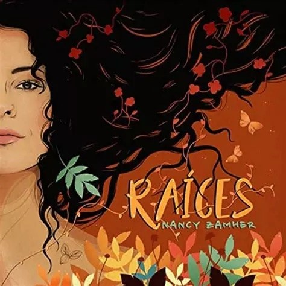
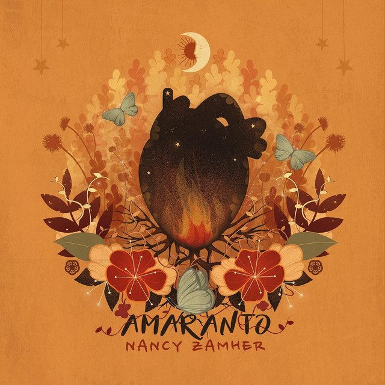
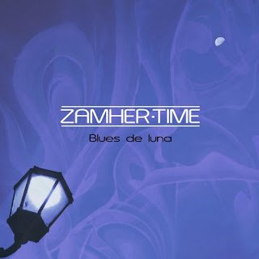

SEP2026
«Somos», con El Palomar
Sale el primer sencillo del primer disco del coro de cantautoras El Palomar. La canción es composición de Nancy.
Ver en YouTube →Un mestizaje de sonoridades enraizadas en el folclor latinoamericano, la música popular mexicana y el blues, contado desde una mirada de mujer.
Sale el primer sencillo del primer disco del coro de cantautoras El Palomar. La canción es composición de Nancy.
Ver en YouTube →Concierto en vivo transmitido por el 96.1 FM dentro de la serie radiofónica Intersecciones.
Ficha del concierto →Estreno de su nuevo sonido con banda renovada: 13 años de componer y un regreso al blues, con temas de siempre en arreglos nuevos y canciones inéditas.
Más información →Una sesión en vivo grabada con la nueva banda, para escuchar el sonido de esta etapa.
Banda actual: Nancy Zamher (voz y guitarra eléctrica) · Rima Yamir (guitarra eléctrica) · Aislinn Rodríguez (bajo) · Edgar Jiménez (batería) · Daniel de los Santos (teclado).
Nancy Zamher es cantante y compositora de la Ciudad de México. Su identidad autoral es un mestizaje de sonoridades enraizadas en el folclor latinoamericano y la música popular mexicana.
Su música aborda temáticas desde una perspectiva femenina. Con versos, cantos y emociones, muestra la belleza de la identidad mexicana y retrata situaciones actuales, historias de mujeres mexicanas y reflexiones personales, siempre con su anclaje en el género de la canción.
Es también periodista. Desde hace más de dos años conduce la barra matutina de Horizonte 107.9 FM, la emisora de jazz del Instituto Mexicano de la Radio (IMER). Forma parte del coro de cantautoras El Palomar como cantante, arreglista y directora coral.
Egresó del Taller de Composición de la Sociedad de Autores y Compositores de México (SACM, 2019–2021) y estudió Teoría musical en la Casa de la Música Mexicana. En octubre de 2019 obtuvo el primer lugar en el 4.º Concurso Viva la Canción de Autor de la Ciudad de México. Ha desarrollado su voz con Iraida Noriega, Betsy Pecanins, Mike Melo, Hebe Rosell, Marlon Saunders y Mamselle Ruíz. Antes de dedicarse de lleno a la música estudió en la Escuela de Periodismo Carlos Septién García (2006–2010).
En 2021 publicó su primer disco de larga duración, Raíces, que va del son, el bolero y la cumbia al reggae, el tumbao y los acentos del rock. Antes había editado los EP Blues de Luna (2012) y Pentasoul (2015). En 2025 publicó el EP Cicatrices, con seis canciones escritas en 2015, para cerrar esa etapa. En 2026 celebra 13 años de componer con un sonido nuevo, más cercano al blues y a los estilos afroamericanos, y una banda renovada. Lo estrenó en el Festival Eurojazz del CENART, lo llevó a la Sala Julián Carrillo de Radio UNAM y lo grabó en una live session. Ya prepara su próximo disco, Guardianas, con canciones sobre historias de mujeres mexicanas.
Publica su primer EP, Blues de Luna, con temas de su autoría.
Edita el EP Pentasoul.
Comienza la exploración hacia sus raíces que daría forma a Raíces. Jorge García Montemayor se suma como arreglista, director musical y guitarrista de su banda.
Graba Raíces. Gana el primer lugar del 4.º Concurso Viva la Canción de Autor de la Ciudad de México. Ingresa al Taller de Composición de la SACM y estudia Teoría musical en la Casa de la Música Mexicana.
Lanza los sencillos Sangre de cacao (junio) y Amaranto (28 de agosto), este último acompañado por la serie de video #AmarAmar.
Siguen los sencillos Flor Violeta y Gabriela, y el 25 de junio publica el álbum completo Raíces en plataformas digitales. Termina el Taller de Composición de la SACM.
Presenta Raíces en vivo en el Foro Hilvana (28 de noviembre de 2021). A finales de 2022 lanza «Que pase el otoño», una ranchera-country al ritmo del gypsy jazz y primer sencillo de Cicatrices. El 1 de diciembre la presenta en el Foro del Tejedor, donde cierra el ciclo de Raíces, con Mariana Santiago como artista invitada.
Empieza a conducir la barra matutina de Horizonte 107.9 FM (IMER). Con El Palomar canta en el Teatro de la Ciudad Esperanza Iris en el concierto del cuarto aniversario del coro, dedicado a las madres buscadoras. Ahí comparte la dirección coral con Bárbara Riquelme y Alex Ellis, y el coro interpreta su canción «Tesoro».
El 12 de junio publica el EP Cicatrices, seis canciones escritas en 2015 que cierran la etapa iniciada ese año. Comienza a producir Guardianas.
Estrena su nuevo sonido, más blues, con el concierto «Por la libre» en el Festival Eurojazz (CENART, 14 de marzo). Le siguen el concierto del 5 de junio en la Sala Julián Carrillo de Radio UNAM, transmitido por el 96.1 FM, y una live session. En septiembre El Palomar lanza «Somos», escrita por Nancy, como primer sencillo de su primer disco.

Su nuevo trabajo, que reúne canciones con historias de mujeres mexicanas, entre el blues y los estilos afroamericanos y latinos.

Un viaje melancólico al pasado con canciones escritas en 2015, que van de la música popular mexicana a la rumba, el rock y el rhythm and blues. Cierra la etapa que empezó en 2015. Producción de Felipe Souza y Ricardo Héctor Jiménez; arreglos y dirección musical de Jorge García Montemayor.

Un compendio de canciones cálidas y alegres, con cuerdas, percusiones, zapateado y versos cantados en décimas. Producción de Felipe Souza y Ricardo Héctor Jiménez; arreglos y dirección musical de Jorge García Montemayor.

Pentasoul es el dueto de Nancy Zamher con el guitarrista Gregorio Gómez. El EP se grabó en 2015 entre la Ciudad de México y Querétaro, con mezcla de Josué Partida y masterización de Luis Herrera.

Su primer EP, publicado con el nombre Zamher·Time y nacido del blues, el género que marcó sus primeras letras.
El Palomar es un coro de cantautoras que viven en la Ciudad de México y vienen de distintas partes de Latinoamérica. Su repertorio se arma con canciones de sus propias integrantes. Nancy canta en el coro, hace arreglos y ha dirigido al coro en varias canciones.
En 2024 dirigió al coro, junto con Bárbara Riquelme y Alex Ellis, en el Teatro de la Ciudad Esperanza Iris, en el concierto del cuarto aniversario dedicado a las madres buscadoras. En septiembre de 2026 salió «Somos», composición de Nancy, como primer sencillo del primer disco de El Palomar.
Desde hace más de dos años, Nancy conduce la barra matutina de Horizonte, la emisora de jazz del Instituto Mexicano de la Radio, donde junta su oficio de periodista con su amor por la música.
Una serie de cuatro capítulos con reflexiones sobre el amor, más allá del amor romántico, contadas por amigas y amigos de Nancy para celebrar el estreno de Amaranto (agosto de 2020). Guitarras y arreglos de Jorge García Montemayor, guitarra eléctrica de Tulio Gálvez, edición de Kino Luiggi.
hola@nancyzamher.com